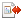

Working Copy View
The Working Copy view allows you to manage the content of an SVN working copy. If the view is not displayed, it can be opened by selecting it from the menu.
- The list of defined working copies.
- A set of view modes that allow you to filter the content of the working copy based on the resource status (such as incoming or outgoing changes).
- Settings menu.
-
 All
Files - Resources (files and folders) are presented in a hierarchical
structure with the root of the tree representing the location of the working copy on the
file system. Each resource has an icon representation that describes the type of
resource and also depicts the state of that resource with a small overlay icon.
All
Files - Resources (files and folders) are presented in a hierarchical
structure with the root of the tree representing the location of the working copy on the
file system. Each resource has an icon representation that describes the type of
resource and also depicts the state of that resource with a small overlay icon.Figure 1. Working Copy View - All Files View Mode 
 Modified - The resource tree presents resources modified locally
(including those with conflicting content) and remotely. Decorator icons are used to
differentiate between various resource states:
Modified - The resource tree presents resources modified locally
(including those with conflicting content) and remotely. Decorator icons are used to
differentiate between various resource states:- Incoming modification from repository:
 - File
content or properties modified remotely.
- File
content or properties modified remotely. - New
file added remotely.
- New
file added remotely.- - File deleted remotely.
- Outgoing modification to repository:
 - File
content or properties modified locally.
- File
content or properties modified locally. - New
file added locally.
- New
file added locally.- - File deleted locally.
- Pseudo-conflict state - A resource being locally and remotely modified at the same time, or a parent directory of such a resource.
-
 Real conflict state - A
resource that had both incoming and outgoing changes and not all the differences could
be merged automatically through the update operation (manually editing the local file
is necessary for resolving the conflict).
Real conflict state - A
resource that had both incoming and outgoing changes and not all the differences could
be merged automatically through the update operation (manually editing the local file
is necessary for resolving the conflict).
- Incoming modification from repository:

 Incoming -
The resource tree presents only incoming changes.
Incoming -
The resource tree presents only incoming changes.- Outgoing - The resource tree presents only outgoing changes.
 Conflicts -
The resource tree presents only conflicting changes (real conflicts and
pseudo-conflicts).
Conflicts -
The resource tree presents only conflicting changes (real conflicts and
pseudo-conflicts).
- Name - Resource name. Resource icons can have the
following decorator icons:
- Additional status information:
- Propagated modification marker - A folder marked with this icon indicates that the folder itself presents some changes (such as modified properties) or a child resource has been modified.
 External -
This indicates a mapping of a local directory to the URL of a versioned resource.
It is declared with a
External -
This indicates a mapping of a local directory to the URL of a versioned resource.
It is declared with a svn:externalsproperty in the parent folder and it indicates a working copy not directly related with the parent working copy that defines it. Switched -
This indicates a resource that has been switched from the initial repository
location to a new location within the same repository. The resource goes to this
state as a result of the Switch
action executed from the contextual menu of the Working Copy view.
Switched -
This indicates a resource that has been switched from the initial repository
location to a new location within the same repository. The resource goes to this
state as a result of the Switch
action executed from the contextual menu of the Working Copy view. Grayed - A resource with a grayed-out icon,
but no overlaid icon, is an ignored resource. It is obtained with the
Add to svn:ignore action.
Grayed - A resource with a grayed-out icon,
but no overlaid icon, is an ignored resource. It is obtained with the
Add to svn:ignore action.
- Current SVN depth of a folder:
- Immediate children (immediates) (a variant of sparse checkout) - The directory contains only direct file and folder children. Child folders ignore their content.
 File
children only (files) (a variant of sparse checkout) - The directory contains
only direct file children, disregarding any child folders.
File
children only (files) (a variant of sparse checkout) - The directory contains
only direct file children, disregarding any child folders. This
folder only (empty) (a variant of sparse checkout) - The directory discards any child resource.
This
folder only (empty) (a variant of sparse checkout) - The directory discards any child resource.
Note:- Any folder not marked with one of the depth icons, has recursive depth (infinity) set by default (presents all levels of child resources).
- Although folders not under version control can have no depth set, Oxygen XML Editor presents unversioned and ignored folders with empty depth when Show unversioned directories content or Show ignored directories content options are not selected.
- Additional status information:
- Local file status -
Shows the changes of working copy resources that were not committed to the repository yet.
The following icons are used to mark resource status:
 - Resource is
not under version control (unversioned).
- Resource is
not under version control (unversioned). - Resource is being ignored because
it is not under version control and its name matches a file name pattern defined in
one of the following places:
- Resource is being ignored because
it is not under version control and its name matches a file name pattern defined in
one of the following places:- global-ignores section in the SVN client-side config file.Attention: If you do not explicitly set the
global-ignoresruntime configuration option (either to your preferred set of patterns or to an empty string), Subversion uses the default value. - Application global ignores option of Oxygen XML Editor.
- The value of a svn:ignore property set on the parent folder of the resource being ignored.
- global-ignores section in the SVN client-side config file.
 - Marks a newly
created resource, scheduled for addition to the version control system.
- Marks a newly
created resource, scheduled for addition to the version control system.- - Marks a resource scheduled for addition, created by copying a resource already under version control and inheriting all its SVN history.
 - The content of
the resource has been modified.
- The content of
the resource has been modified. - Resource has been replaced in
your working copy (the file was scheduled for deletion, and then a new file with the
same name was scheduled for addition in its place).
- Resource has been replaced in
your working copy (the file was scheduled for deletion, and then a new file with the
same name was scheduled for addition in its place). - Resource is
deleted (scheduled for deletion from Repository upon
the next commit).
- Resource is
deleted (scheduled for deletion from Repository upon
the next commit).  - The resource is incomplete (as
a result of an interrupted check out or update operation).
- The resource is incomplete (as
a result of an interrupted check out or update operation). - The resource is missing because
it was moved or deleted without using an SVN-aware application.
- The resource is missing because
it was moved or deleted without using an SVN-aware application. - The contents of the resource is in
real
conflict state.
- The contents of the resource is in
real
conflict state.- - Resource is in a name conflict state.
- - Resource is in tree
conflict state after an update operation because:
- Resource was locally modified and incoming deleted from repository.
- Resource was locally scheduled for deletion and incoming modified.
- - Resource is obstructed (versioned as one kind of object: file, directory, or symbolic link, but has been replaced outside Syncro SVN Client by a different kind of object).
 Local
properties status - Marks the resources that have SVN
properties, with the following possible states:
Local
properties status - Marks the resources that have SVN
properties, with the following possible states: - The
resource has SVN properties set.
- The
resource has SVN properties set. -
The resource properties have been modified.
-
The resource properties have been modified. - Properties for this
resource are in real conflict with property updates received
from the repository.
- Properties for this
resource are in real conflict with property updates received
from the repository.
- Revision - The current revision number of the resource.
- Date - Date when the resource was last time modified on the disk.
- BASE Revision - The revision number of the pristine version of the resource.
- BASE Date - Date when the pristine version of the resource was last time committed in the repository.
- Author - Name of the person who made the last modification on the pristine version of the resource.
- Remote
file status - Shows changes of resources recently modified in the
repository. The following icons are used to mark incoming resource status:
- - Resource is newly added in repository.
 - The content of the resource has
been modified in repository.
- The content of the resource has
been modified in repository. - Resource was replaced in
repository.
- Resource was replaced in
repository.- - Resource was deleted from repository.
-
Remote properties status - Resources marked with the icon have incoming modified
properties from the repository.
- Remote revision - Revision number of the resource latest committed modification.
- Remote date - Date of the resource latest modification committed on the repository.
- Remote author - Name of the author who committed the latest modification on the repository.
-
 Lock
information - Shows the lock state of a resource. The lock mechanism is a
convention intended to help you signal other users that you are working with a
particular set of files. It minimizes the time and effort wasted in solving possible
conflicts generated by clashing commits. A lock gives you exclusive rights over a file,
only if other users follow this convention and they do not try to bypass the lock state
of a file.A folder can be locked only by the SVN client application, completely transparent to the user, if an operation in progress was interrupted unexpectedly. As a result, folders affected by the operation are marked with the
Lock
information - Shows the lock state of a resource. The lock mechanism is a
convention intended to help you signal other users that you are working with a
particular set of files. It minimizes the time and effort wasted in solving possible
conflicts generated by clashing commits. A lock gives you exclusive rights over a file,
only if other users follow this convention and they do not try to bypass the lock state
of a file.A folder can be locked only by the SVN client application, completely transparent to the user, if an operation in progress was interrupted unexpectedly. As a result, folders affected by the operation are marked with the symbol. To clear the locked state of a folder, use the
Clean up action.Note: Users can lock only files.The following lock states are displayed:
symbol. To clear the locked state of a folder, use the
Clean up action.Note: Users can lock only files.The following lock states are displayed:- no lock - the file is not locked. This is the default state of a file in the SVN repository.
-
remotely locked (
 ) - shown when:
) - shown when: - Another user has locked the file in the repository.
- The file was locked by the same user from another working copy.
- The file was locked from the Repositories view.
If you try to commit a new revision of the file to the repository, the server does not allow you to bypass the file lock.Note: To commit a new revision, you need to wait for the file to be unlocked. Ultimately, you might try to break or steal the lock, but this is not what other users expect. Use these actions carefully, especially when you are not the file lock owner. - locked (
 )
- displayed after you have locked a file from the current working copy. Now you have
exclusive rights over the corresponding file, being the only one who can commit
changes to the file in the repository.Note: Working copies keep track of their locked files, so the locks are presented between different sessions of the application. Synchronize your working copy with the repository to make sure that the locks are still valid (not stolen or broken).
)
- displayed after you have locked a file from the current working copy. Now you have
exclusive rights over the corresponding file, being the only one who can commit
changes to the file in the repository.Note: Working copies keep track of their locked files, so the locks are presented between different sessions of the application. Synchronize your working copy with the repository to make sure that the locks are still valid (not stolen or broken). - stolen (
 )
- a file already locked from your working copy is being locked by another user. Now
the owner of the file lock is the user who stole the lock from you.
)
- a file already locked from your working copy is being locked by another user. Now
the owner of the file lock is the user who stole the lock from you. - broken (
 )
- a file already locked from your working copy is no longer locked in the repository
(it was unlocked by another user).Note: To remove the stolen or broken states from your working copy files, you have to Update them.
)
- a file already locked from your working copy is no longer locked in the repository
(it was unlocked by another user).Note: To remove the stolen or broken states from your working copy files, you have to Update them.
If one of your working copy files is locked, hover the mouse pointer over the lock icon to see more information:- Lock type - current file lock state
- Owner - the name of the user who created the lock
- Date - the date when the user locked the file
- Expires on - date when the lock expires. Lock expiry policy is set in the repository options, on the server side
- Comment - the message attached when the file was locked
- Size - Resource size on disk
- Type - Contains the resource type or file extension
The toolbar contains the following options for switching to a different working copy:
- List of Defined Working Copies - A drop-down menu that contains all the working copies Oxygen XML Editor is aware of. When you select a different working copy from the list, the newly selected working copy content is scanned and displayed in the Working Copy view.
 Working
Copies Manager (
Working
Copies Manager ( on Mac
OS X) - Opens a dialog box that displays the working copies Oxygen XML Editor is aware of. In this dialog box, you can add existing working copies or
remove those you no longer need. If you try to add a folder that is not a valid Subversion
working copy, Oxygen XML Editor warns you that the selected directory is not under
version control. Note: Removing a working copy from this dialog box does NOT remove it from your file system; you will have to do that manually.
on Mac
OS X) - Opens a dialog box that displays the working copies Oxygen XML Editor is aware of. In this dialog box, you can add existing working copies or
remove those you no longer need. If you try to add a folder that is not a valid Subversion
working copy, Oxygen XML Editor warns you that the selected directory is not under
version control. Note: Removing a working copy from this dialog box does NOT remove it from your file system; you will have to do that manually.